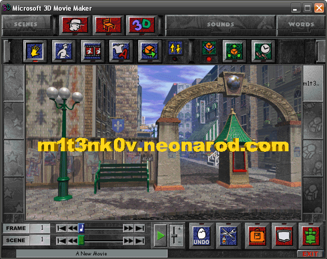

|
|
|
|
SITEMAP Home Blog About me History Contacts Banners Links m1t3nk0v, 2021-2022 
|
<- backMicrosoft open-sources 3D Movie MakerMay 4, 2022, 20:30 MSK 3D Movie Maker is a children's computer program published by Microsoft in 1995 under the Microsoft Home multimedia product line. 3D Movie Maker allows you to use 40 characters in pre-rendered scenes to create 3D animations, program them to perform various actions, add objects and audio effects, and even record voices using a microphone. As a result, the user receives a computer-animated movie with a frame rate of 6 fps. Several 3DMM expansion packs and utilities exist, both official (e.g. Nickelodeon 3D Movie Maker) and user-made. Despite its age and obvious limitations, such as low frame rate and lack of Russian language support, its community is still alive and well. Enthusiasts continue to make animated movies with it and modifications for it. Today Microsoft released the 3D Movie Maker source code under the MIT license, 27 years since its original release. But it noted that:
The 3D Movie Maker source code encourages developers to make it work on modern versions of Windows or any other operating systems. |
{kind=link}